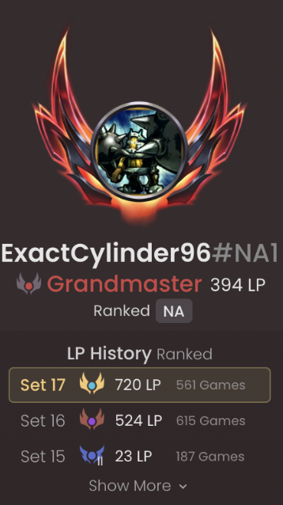

TFT Set 17, By The Numbers
An SQL analysis of my own Set 17 ranked match history--556 games, pulled from Riot's API into a relational database and interrogated the way I interrogate product data as a PM. I pose hypotheses, run queries, and analyze the results! I thought it would be fun to do for the first set I hit Challenger to see what went right, as well as what could go better.
Project Overview
This project pulls my full Set 17 ranked match history through Riot's TFT API, models it into a relational schema, and asks it the same kind of questions I'd ask of any product dataset. Pose a hypothesis, run the query, and analyze what the result actually supports, including the times it didn't support what I expected.

Set 17 -- 720 LP peak across 561 games. Grandmaster (394 LP) as of this writing.
I fetched 563 final boards from the API. Of the 563, I ended up excluding 7 as outlier games whose final boards don't reflect the games themselves at all. That left 556 games behind the data on this page.
Why this, and why SQL: the point was never to build the most sophisticated pipeline I could. It was to practice real SQL (joins, aggregation, a hand-rolled correlation coefficient) against a dataset I actually have my own context to sanity-check. A few of the findings below didn't survive that sanity check on the first pass, and I've left those visible.
Building the Dataset
Getting from raw match history to something queryable took four small scripts and the question how to define a game that is not representative of my play and should be omitted.
The Pipeline
Four pieces are at work:
Five tables hold the data:matches, participants, units, unit_items, and traits. Plus two views that do the scoping so I'm not repeating the same WHERE clause in every query. set17_participants filters everything down to Set 17; set17_participants_clean additionally strips the outlier games below. Augment analysis would have been great, but it's impossible because they unfortunately aren't present anymore in Riot's current match-v1 response (for good reason, since I think augment stats abuse used to mess with player freedom, decision-making, and skill-expression).
Outliers
Two unique endgame situations show up in this data clearly enough that would have skewed every trait and comp number if not omitted.
The first is selling my board to donkey-roll for a three-star five-cost, something that occasionally becomes the optimal play when a lobby is already lost, unless I gamble for a strong finish than accept a guaranteed 3rd or 2nd. In these games, there's a real gap in the data, final boards are comprised of just 5 costs with no synergies (since all other units were sold off for rerolling), and paired with gold_left near zero and a very late last_round.
The second is leaving the game (like a ragequit) once eighth place is already locked in. That one turned out to be rarer than I remembered, and showed up as exactly one game: 147 gold left at round 20, with a level too low for how far the game had progressed to be anything but someone who'd left.
In the end, only 7 of 563 games (about 1 in 80) met both conditions and were cut.
Omitting Traits that Only Exist in the API
A handful of names sitting in the trait table, like Mana and Stargazer (Wolf), weren't traits players ever actually see in-game. I went back into the raw data to check, and found eleven names (Mana, AP, AS, Assassin, Melee, Ranged, HP Tank, Shield Tank, Resist, Summon, Flex) that I knew weren't traits as players know them. This was corroborated by a bare stat or role word instead of a real name, unlike every genuine trait in the set. Those are internal engine classification tags, not synergies I ever chose, and they were unknowlingly riding along in the same API field as the real ones. I've excluded all eleven from both the trait performance and comp identification queries below.
A second pass, prompted by more "traits" I didn't recognize (DRX, Admin, Stargazer (Wolf) again), turned something else up (it seems like Riot's raw API identifiers often just don't match the real in-game display names at all). I cross-referenced against external trait databases (tactics.tools, blitz.gg) and found that traits were different in the API calls--like Morgana's trait MorganaUniqueTrait, which displays in-game as Dark Lady. Same story for Jhin (Eradicator), Fiora (Divine Duelist), Rhaast (Redeemer), Shen (Bulwark), Sona (Commander), Vex (Doomer), Blitzcrank (Party Animal), Tahm Kench (Oracle), Graves (Factory New), Miss Fortune (Gun Goddess). Astronaut isn't a champion reference at all--the real trait is Meeple. Funnily, Admin is what we know as Arbiter.
Findings
Trait/Unit Performance
Which traits (and consequently, some units that come with special traits like Dark Lady's Morgana and Redeemer's Rhaast) am I actually winning with, and which ones am I overrating?
Average placement by active trait (tier_current > 0), minimum 10 games played, across all 556 clean games. Champion-linked traits are shown with the champion in parentheses for reference.
| Trait | Games | Avg Placement | Top4% | Win% |
|---|---|---|---|---|
| Dark Lady (Morgana) | 47 | 3.45 | 70.2 | 17.0 |
| Stargazer (Medallion) | 17 | 3.53 | 58.8 | 29.4 |
| Factory New (Graves) | 35 | 3.66 | 65.7 | 28.6 |
| Eradicator (Jhin) | 104 | 3.67 | 67.3 | 21.2 |
| Divine Duelist (Fiora) | 103 | 3.81 | 66.0 | 19.4 |
| Redeemer (Rhaast) | 142 | 3.81 | 60.6 | 25.4 |
| Bulwark (Shen) | 96 | 3.84 | 64.6 | 19.8 |
| Commander (Sona) | 50 | 3.88 | 62.0 | 22.0 |
| Primordian | 45 | 3.89 | 64.4 | 11.1 |
| Doomer (Vex) | 55 | 3.93 | 61.8 | 23.6 |
| Fateweaver | 92 | 4.09 | 57.6 | 15.2 |
| Party Animal (Blitzcrank) | 139 | 4.10 | 59.7 | 18.0 |
| Oracle (Tahm Kench) | 171 | 4.18 | 57.9 | 17.0 |
| Psionic | 99 | 4.21 | 56.6 | 16.2 |
| Stargazer (Mountain) | 14 | 4.21 | 64.3 | 14.3 |
| Timebreaker | 137 | 4.26 | 53.3 | 16.8 |
| Stargazer (Huntress) | 12 | 4.33 | 50.0 | 16.7 |
| Space Groove | 237 | 4.41 | 50.6 | 13.5 |
| Mecha | 39 | 4.46 | 48.7 | 23.1 |
| Dark Star | 229 | 4.58 | 48.5 | 14.0 |
| Meeple | 113 | 4.69 | 48.7 | 12.4 |
| Arbiter | 50 | 4.76 | 44.0 | 10.0 |
| Gun Goddess (Miss Fortune) | 16 | 5.56 | 18.8 | 6.3 |
Dark Lady, Factory New, and Eradicator--Morgana, Graves, and Jhin's respective traits--are, by a clear margin, my three strongest traits to have active on my final board, all sitting comfortably under a 3.7 average placement with top-four rates north of 65%. Gun Goddess (Miss Fortune) sits alone at 5.56 average placement and an 18.8% top-four rate across sixteen games. Sixteen games is enough that I don't think it's noise, but it isn't enough on its own to tell me why. My educated guess is that there are several sevenths and eights I had where I overestimated the amount of econ I had to hit my three-costs (I only played Miss Fortune in 3-cost reroll), or lowrolled and hit no econ augments when I was reliant on them.
This table excludes fourteen names from the API that don't correspond to real Set 17 traits: eleven internal engine tags (Mana, AP, AS, Assassin, Melee, Ranged, HP Tank, Shield Tank, Resist, Summon, Flex) and three more (DRX, Stargazer Wolf, Stargazer Shield).
Economy vs. Placement
Does gold left at game-end actually predict placement?
I grouped sub-10 gold as one group here rather than splitting out exactly-zero, because both represent games where I give up on greeding for interest and cap out a board by rolling down, knowing I could get eliminated in the next round. What actually matters isn't 0 versus 7 gold--it's low gold versus a lot of banked gold, and whether that low-gold state shows up early or late.
| Gold Left | Games | Avg Placement | Top4% |
|---|---|---|---|
| <10 | 423 | 4.39 | 52.2 |
| 10-19 | 45 | 4.49 | 51.1 |
| 20-29 | 31 | 3.94 | 54.8 |
| 30+ | 57 | 4.49 | 52.6 |
Pearson r = -0.013 (n=556)
That's essentially zero linear relationship, and once <10 is grouped as one bucket, the bucketed view is honestly pretty flat too--everything sits within half a placement of everything else, except a modestly better 20-29 bucket that's only 31 games and could easily be noise. By itself, gold left at game-end tells me almost nothing.
Splitting the low-gold bucket by how far the game had progressed is where the real signal shows up. The 18 times I hit under 10 gold before round 25 (despite a perfectly reasonable level) produced an average placement of 7.83 with zero top-four finishes: fifteen eighths, three sevenths. These are games where I likely lowrolled, mistakenly played an overcontested line that I didn't hit, or just had poor line selection, and ended up rolling all the way down just to salvage a 7th (three times), and far more often failing outright into 8th (fifteen times). The other 405 low-gold games, the ones that happened at round 25 or later, look different: 4.23 average placement, 54.6% top-four. Of course, a lot of my best games end with little to no gold because my final board should always end on an attempted cap out. Low gold isn't good or bad on its own. Early, it's the sign of a bad game, and late, it's just what winning looks like.
Comp Identification
What are my most-played comps, and how do they actually compare to each other?
Grouping games by the exact set of active traits reveals 10 distinct comps played 8 or more times.
| Comp (core traits) | Games | Avg Placement | Top4% | Win% |
|---|---|---|---|---|
| Meeple / Fateweaver / Bulwark / Timebreaker | 14 | 3.07 | 85.7 | 35.7 |
| Arbiter / Party Animal / Dark Star / Space Groove | 10 | 3.70 | 80.0 | 10.0 |
| Divine Duelist / Psionic / Oracle | 22 | 4.00 | 72.7 | 4.5 |
| Dark Star / Psionic / Redeemer / Space Groove | 11 | 4.09 | 54.5 | 18.2 |
| Meeple / Dark Star / Redeemer / Space Groove | 13 | 4.23 | 61.5 | 7.7 |
| Party Animal / Dark Star / Commander / Space Groove / Doomer | 12 | 4.25 | 58.3 | 8.3 |
| Mecha / Redeemer | 12 | 4.50 | 50.0 | 25.0 |
| Fateweaver / Stargazer (Medallion) / Timebreaker | 8 | 5.00 | 25.0 | 12.5 |
| Meeple / Fateweaver / Timebreaker | 13 | 5.69 | 15.4 | 7.7 |
| Meeple (alone) | 8 | 6.88 | 0.0 | 0.0 |
I was very surprised that Corki Riven (Meeple/Fateweaver/Bulwark/Timebreaker) is clearly my best line: 3.07 average placement, 85.7% top-four, 35.7% win rate across fourteen games. Interestingly, the bottom two rows isolate one of these trait at a time. Drop Bulwark and keep the other three (Meeple/Fateweaver/Timebreaker) and the same core falls to 5.69 average placement, 15.4% top-four, 7.7% win rate across thirteen games. Drop Fateweaver and Timebreaker too, and it's just Meeple alone--eight games, 6.88 average placement, zero top-fours, zero wins. I hadn't realized how load-bearing Shen specifically might be in the comp, though it is more likely a reflection of having a strong, win-streaking game where I was able to fully cap out. It is safe to say though that I underestimated the power (at least in my gameplay) of a fully capped Corki Riven board, and also that I don't know when to play vertical Meeples.
The other result worth flagging is that Divine Duelist/Psionic/Oracle hits top-four nearly three-quarters of the time (72.7%) across twenty-two games (my most-played comp on this list) but converts to a win only 4.5% of the time. This means that it's not a weak comp, it's a comp with a ceiling: reliable enough to stabilize a game where I am likely low health going into stage 4, not built to actually win out.
This groups by exact trait-set match, so two games that are functionally the same comp with one flex-slot trait swapped won't merge here.
Performance Trend Over Time
Am I actually improving over the course of this climb, or does it just feel that way?
Weekly average placement from Set 17 launch through early July 2026.
| Week (2026) | Games | Avg Placement | Top4% |
|---|---|---|---|
| 15 | 35 | 3.63 | 68.6 |
| 16 | 65 | 4.42 | 49.2 |
| 17 | 63 | 4.52 | 49.2 |
| 18-26 (avg) | 386 | ~4.4 | ~52 |
Week 15, right after Set 17 launched, was, as expected, my strongest stretch (3.63 average placement, 68.6% top-four). Results settled into a flat plateau around 4.2 to 4.6 for the following three months, with no real upward trend to point to.
The non-TFT player (or more accurately, any multiplayer/live-service game ranked ladder player) might ask: was week 15 just an early stretch of luck, or maybe just a thirty-five game sample that is too small to trust? Experience in ranked TFT teaches you that the seasonal ladder reset works so that climbing early is made easier through MMR and the simple fact that you are playing against a much larger portion of the playerbase, until those who are better at climbing whittle themselves down at the top. From there, players often have momentum-based stretches of climbing and dropping, but their AVP flattens out.
Damage Output vs. Placement (and Why It's a Trap)
Does dealing more damage to other players correlate with placement, and is that actually useful to know?
| Damage Bucket | Games | Avg Placement | Top4% |
|---|---|---|---|
| <50 | 67 | 7.64 | 0.0 |
| 50-99 | 209 | 5.99 | 11.5 |
| 100-149 | 169 | 3.08 | 92.3 |
| 150-199 | 86 | 1.43 | 100.0 |
| 200+ | 25 | 1.12 | 100.0 |
Pearson r = -0.916 (n=556)
Unsurprisingly, this is the highest correlation in my dataset. Of course, if you deal damage, you are surviving rounds and outliving opponents, so you place better. The nuance is in whether the final board is independent of damage dealt. For example, arguably the highest capping board in the game is an Anima Cashout board. However, an Anima game that relies on loss-streaking to be successful is paradoxical to the data here, because you will not be dealing as much damage as a game where you win-streak the whole time. What a deeper analysis would likely reveal is that ending the game on a Mech board with a Jinx 3 with Battle Bunny Crossbow (from a 400 cashout), a Fiora 2 with an Anima item (from a 500 cashout), or any other obvious indicator on a final board that a 400-600 Anima cashout was completed results in a high AVP, but not as high of damage dealt. As of now, I cannot tell what portion of the lower damage dealt games reflect this risky playstyle of loss-streak into winnout, whether it's Anima or Fast 9.
Item Performance
Does itemization on the final board actually predict placement, and which specific items are pulling the most weight?
Total items equipped across the whole board at game-end, bucketed against placement:
| Items on Board | Games | Avg Placement |
|---|---|---|
| <10 | 71 | 6.38 |
| 10-12 | 186 | 5.13 |
| 13-15 | 192 | 3.73 |
| 16-18 | 86 | 2.98 |
| 19+ | 21 | 2.67 |
This is basically Finding 5 again, more items on board is really a proxy for more time alive, and more time alive is placement by definition. I did include a more insightful angle below, but I thought I would leave my first instinct in and explain why it was not optimal. I'm not treating the item-count relationship as a real lever for the same reason damage wasn't one.
The per-item breakdown is more useful, minimum 15 games each. At the top: Ornn Infinity Force (16 games, 3.06 avg, 81.3% top-4)--a forged artifact item, small sample but a real standout. At the bottom, something I didn't expect going in: four of my worst-performing items are emblems--Psionic (5.73 avg, 20% top-4, my single worst item), Arbiter Emblem (4.60), Meeple/Astronaut (4.74), and Dark Star (4.88). I don't think the emblem is what's causing the bad placement. The bad result more likely reflects the compromised board state that made the emblem necessary in the first place, not the item itself. Having to take an augment (like URF) I don't want to in order to slam a Dark Star emblem while on a loss streak (to reach 6 Dark Star) while the winstreaker naturals a Jhin and hits 6 Dark Star anyways, is the sign of a bad game. This informs me that maybe there are better options than slamming an emblem if I am just trying to save placements.
Here is the improvement referenced previously. The raw item count is only a proxy for time-alive when you compare across different games, which run wildly different lengths and have different portals, Space Gods, and PvE drops. A fairer cut is my item count against the average of the other seven players in the same lobby, which better controls for the previous factors. Of course, when I bot-4, I will tend to have less items than those who top-4, and vice versa.
| Relative Itemization | Games | Avg Placement | Top4% |
|---|---|---|---|
| Well below lobby | 105 | 6.43 | 14.3 |
| Slightly below lobby | 124 | 5.17 | 36.3 |
| Slightly above lobby | 138 | 3.91 | 60.9 |
| Well above lobby | 189 | 3.07 | 77.8 |
Pearson r = -0.541 (n=556)
Weaker than the damage and raw item-count correlations, and for good reason--this version isn't just restating game length. Being in a position where I can gain more items (while maintaining econ and hitting my final board) than the seven other players actually in that lobby tracks placement more honestly than comparing across games of totally different lengths. It's still not fully clean: whoever places first in a given lobby also gets more time in that same game to itemize than whoever gets eliminated in round 10, but it's cleaner.
Session Length (Tilt or Momentum?)
How does my play change the longer a queue session runs?
I grouped games into sessions using a window function: any gap of 45+ minutes between consecutive games starts a new session. A single game runs ~35-40 minutes, and the data has a clean break there (most back-to-back games are under 45 minutes apart, then a real jump to hours). 220 sessions total, averaging 2.53 games each, longest run 15 games in one sitting (wow).
| Position in Session | Games | Avg Placement | Top4% |
|---|---|---|---|
| 1st game | 220 | 4.55 | 49.5 |
| 2nd game | 119 | 4.11 | 56.3 |
| 3rd game | 78 | 4.55 | 46.2 |
| 4th-5th game | 83 | 4.52 | 54.2 |
| 6th-8th game | 42 | 4.05 | 59.5 |
| 9th+ game | 14 | 3.29 | 64.3 |
I went in knowing that I could find a tilt story, where placement gets worse the longer I keep queuing. However, my original instinct, which is that my long sessions are long because they are going well and I want to continue the climb, was proven true. There's no downward trend at all--if anything the long tail (9th+ game, 3.29 avg) is my best bucket, though that's only 14 games and I don't want to overreact to it. My read is that this reflects a sort of flow state where decision-making keeps improving the longer a good session runs. The honest counter-read: this data can't actually separate that from pure survivorship--I only reach a 9th game at all when things are already going well, so a session-selection effect would produce the exact same shape without any "flow state" required. Another pattern that holds up is that my very first game of a session (4.55) is consistently worse than my second (4.11), across a much larger sample (220 vs. 119 games). That reads like a warm-up effect--worth testing deliberately by tracking whether a warm-up game on PBE or an alt account before "real" ranked attempts changes anything, rather than assuming the first game of the day is as sharp as the second.
Limitations
The honest counterargument to all of this is that it's a sample size of one--556 games from a single account, in a single meta, played by someone who already knows this game well enough to bias his own reading of the results.
That's fair, and I don't think there's a clean way around it inside the scope of this project. What I can say is that the findings above are internally consistent--the trait, comp, and econ numbers all point in compatible directions rather than contradicting each other--which at the worst is interesting evidence they're capturing something real about how I play, even if they say nothing about how anyone else should.
A few other honest gaps: augment data isn't in the API response I have access to, so that analysis had to be taken out of consideration. Comp identification uses exact trait-set matching, not fuzzy clustering, so minor flex-slot variations don't merge into the same row. And both the damage-correlation and item-count findings above are mostly mechanical (surviving longer produces both by definition), though Finding 5's Anima-cashout discussion argues there may be real signal mixed in that this data can't fully separate out--worth reading those two as open questions rather than settled ones either way.
A note on perspective: I've played this game long enough, and this account well enough, that I'm not a neutral observer of my own data. Where a result confirmed something I already believed, I tried to hold it to the same bar as the ones that surprised me.
Anyways, if you made it this far, thank you for reading. The full pipeline, schema, and every query behind these numbers are in the GitHub repo, if you want to see exactly how this got made. And if you haven't already, the other half of this project is my product teardown of TFT as a live service. Some other questions I want to analyze about my play in the future include things like: do I end sessions on a downswing or upswing, and on a win or a loss; my reroll vs. 4-cost level-8 vs. fast-9 game placements; my AVP on each portal; and my AVP on each Space God (that one is set-specific).